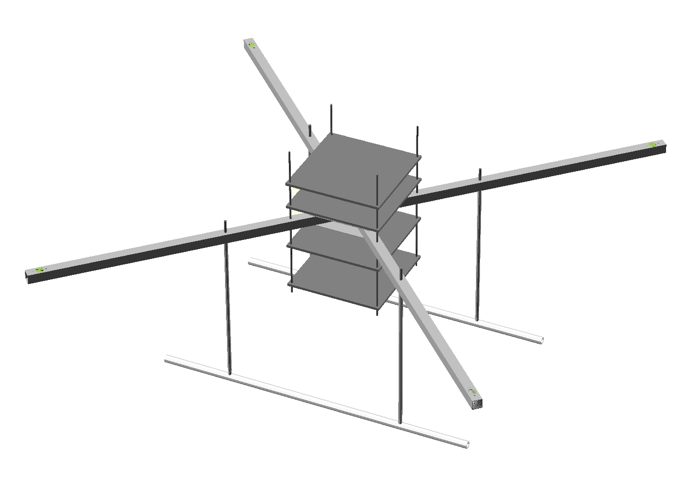
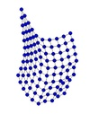

I’m an enthusiast of free and open source software. Here is a list of select side projects I’ve been working on. Check out my GitHub repositories for a more extensive list of open source contributions.
Project Condor
2014-2015

Suite of projects related to engineering and navigating a quadrotor.
akka-serial
2013
Library for serial communication from Scala, based on the actor model.
k8055
2012
A linux compatible interface to the Velleman K8055 development board.
Virtual Hadron Collider
2011

A particle simulator with 3D visualization, 1st year project in physics CS course.
A Simple Mechanics Simulator (SiMS)
2010

A real-time mechanics simulator, my final year school project.
Signature
My public key’s fingerprint is: 4E7D A7B5 A0F8 6992 D6EB 3F51 4601 8786 62E3 3372
Check identity on keybase.io